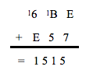
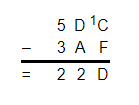
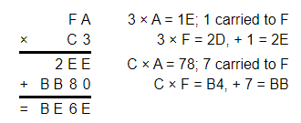
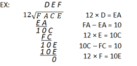

Hex Calculator

Hexadecimal Calculator Add, Subtract, Multiply or Divide
Value Hex : {{hexOneCal}} + {{hexTwoCal}} = {{rsltCalDecimal}}
Value Hex : {{hexOneCal}} - {{hexTwoCal}} = {{rsltCalDecimal}}
Value Hex : {{hexOneCal}} x {{hexTwoCal}} = {{rsltCalDecimal}}
Value Hex : {{hexOneCal}} ÷ {{hexTwoCal}} = {{rsltCalDecimal}}
Value decimal : {{hexOne}} + {{hexTwo}} = {{rsltCalHex}}
Value decimal : {{hexOne}} - {{hexTwo}} = {{rsltCalHex}}
Value decimal : {{hexOne}} x {{hexTwo}} = {{rsltCalHex}}
Value decimal : {{hexOne}} ÷ {{hexTwo}} = {{rsltCalHex}}
Result : {{rsltCalHex | number}}
Hex to Decimal Calculator
Result : {{rsltHex}}
Decimal to Hex Calculator
Result : {{rsltDecimal}}
Learn more about Hex Calculator
To do algebraic operations with hex numbers, use this tool in hex calculator mode (add, subtract, multiply and divide hexadecimal). Use it in hex converter mode to easily convert a hex number to a decimal number, or a decimal number to a hex number (decimal to hex and hex to the decimal converter), or to convert hex to binary and binary to hex.
What is a hex number?
A hex number, short for hexadecimal number, is a number stated in the hexadecimal positional numeral system with a base of 16 that employs sixteen symbols: the numbers 0 to 9 and the letters A,B,C,D,E, and F to represent values 0 to 15. Small-case letters a through f can be substituted.
For example, 10 in decimal is A in hex, 100 in decimal is 64 in hex, and 1,000 in decimal is 3E8 in hex. Hex numbers, like decimal numbers, contain signs; for example, -1e equals -30 in decimal.
Hexadecimal numbers are primarily utilised in computing by computer system designers, software engineers, and programmers as a handy representation of the underlying binary systems. People in such jobs are more likely to require a hex calculator or hex converter.
Hex number
An average person would come across them on a daily basis when browsing the web since special characters are encoded as a hex number in website addresses (URLs), for example, %20 stands for "space" (blank).
Many websites additionally encode special characters in HTML using their hexadecimal numerical character reference (" & #xcode;"), for example,'is the Unicode for a single quotation mark ('). A typical online surfer should not need a hexadecimal converter or calculator to do so.
You may use our hex calculator to perform mathematical operations on hex numbers (addition, subtraction, multiplication, and division) as well as a hex converter for hex-to-decimal, decimal-to-hex, hex-to-binary, and binary-to-hex conversions.
Here's a table with some numbers expressed in decimal, hexadecimal, and binary formats (base 10, base 2, and base 16).
| Decimal | Hex | Binary |
|---|---|---|
| 1 | 1 | 1 |
| 2 | 2 | 10 |
| 3 | 3 | 11 |
| 5 | 5 | 101 |
| 10 | A | 1010 |
| 11 | B | 1011 |
| 12 | C | 1100 |
| 13 | D | 1101 |
| 14 | E | 1110 |
| 15 | F | 1111 |
| 50 | 32 | 110010 |
| 63 | 3F | 111111 |
| 100 | 64 | 1100100 |
| 1000 | 3E8 | 1111101000 |
| 10000 | 2710 | 10011100010000 |
Converting to and from hex numerals
Converting numbers to and from hex has no effect on the number itself; it only changes its form. You may quickly and simply perform both sorts of conversions with our hex converter above. It is important to note that hex conversion and hex computation are distinct activities that can be performed independently of one another.
Hex to decimal
In the same way that each place in a decimal number represents a power of 10, each position in a hexadecimal numeral represents a power of 16. For example, the decimal representation of the number 20 is 20 in decimal is 2 x 101 + 0 x 100 = 20. In dec, the hex number 20 equals 2 then 2 x 161 + 0 · 160 = 32 in dec. Similarly, the number 1E is 1 x 16 + 14 x 1 = 30 in
To convert hex to decimal, first take the position and convert it to decimal, for example, 9 is 9, while B is converted to 11, then multiply each position by 16 to the power of the position number, counting from right to left and beginning at zero. If you need to compute big exponents such as 168, our exponent calculator can help.
Decimal to hex
As we move from a higher to a lower base, the process becomes more complicated. Assume the integer to be converted from decimal to hex is X. Begin by determining the greatest power of 16 X and denoting it by E. Then, using Z1, compute how many times the power of 16 determined above goes into X. Y1 represents the remainder.
Repeat the preceding steps, starting with Yn, until 16 is greater than the remaining value, then assign the remainder to the 16 0 positions, then assign each of the values Y1...n to its appropriate place, and you will have your hex value.
Algebraic operations with hexadecimal numbers
You may execute the four fundamental arithmetic operations on hex numbers with our tool in hexadecimal calculator mode: addition, subtraction, multiplication, and division. As a result, it also functions as a hexadecimal addition calculator, a hexadecimal subtraction calculator, and so on.
Most people would prefer to make the hexadecimal calculations themselves by utilizing a table for smaller numbers and a base 16 calculator for bigger ones. Subtraction operates the same as any other number system, except that when borrowing a number, you must borrow a group of 16 10 rather than 10 10 as with decimals.
Hex Addition Calculator
The sole difference between hex addition and decimal addition is the addition of the numbers A, B, C, D, E, and F. If the values have not yet been committed to memory, it may be useful to have the decimal equivalents of A through F on hand for executing hex operations. An example of hex addition is shown below. Work through the example and refer to the text below for more information.
When numbers more than 9 (the digits A through F) are present, hex addition includes calculating basic decimal addition while converting between hex and decimal. In the above example, B + 8 equals 11 + 8 = 19. Because there is one set of 16, with three left over, 19 decimal is 13 hex. The 1 carries over to the next column, just like in decimal addition. As a result, the following column is 1 + A (10) + 7 = 18 decimal, or 12 hex. Carry the 1 to the last column, yielding 1 + 8 + B (11) = 20 decimal, or 14 hex. This produces the value 1423 hex.
Hex Subtraction
Hex subtraction is calculated in the same manner as hex addition is: by performing the operation while converting between hex and decimal numbers. Borrowing is the most major distinction between hex and decimal subtraction. When borrowing in hex, the borrowed "1" represents 16decimal instead of 10decimal.
This is due to the fact that the borrowed column is 16 times larger than the borrowing column (the same reason that the borrowed 1 in decimal represents 10). Hex subtraction is no more difficult than decimal subtraction as long as this is acknowledged and conversions of the letter numbers A-F are done correctly. Work through the example and refer to the text below for more information.
C, or 12decimal, is smaller than F, or 15decimal, in the first column on the right in the preceding example. As a result, it is required to borrow from the next column. This changes the D to C and adds 1, or 16 decimal places to the first column. 16 decimal plus 12 decimal minus 15 decimal equals 13 decimal or D in the first column.
The computations for the next columns are simplified since no borrowing is required. Since 1 was borrowed, C - A = 12decimal - 10decimal = 2, and 5 - 3 = 2, resulting in 22D. If the number being subtracted is greater than the number being subtracted from, just swap the numbers' places, compute the subtraction, and add a negative sign to the result.
Hex Multiplication
Hex multiplication can be challenging since the conversions between hex and decimal while executing the operations need more work due to the bigger numerals. A hexadecimal multiplication table can be useful (one is provided below). Otherwise, each step will require manual conversion between decimal and hex.
An example of hex multiplication is shown below. Each of the multiplication and addition stages is presented to the right of the example. It is worth noting that all of the numbers used are hexadecimal. If required, go to the additional section.
Hex Division
Long division in hex is identical to long division in decimal, with the exception that multiplication and subtraction are performed in hex. It is also feasible to convert to decimal and conduct long division in decimal before converting back. The division example will be calculated fully in hex for demonstration reasons. As with multiplication, a hexadecimal multiplication table (such as the one supplied below) would be useful for doing hex division.
Here's an example: It's worth noting that all of the numbers in the example are hexadecimal. Although no borrowing happens in the case below, keep in mind that borrowing in hex results in borrowing 16 decimal rather than 10 decimal. For further information, see the hex subtraction section.
